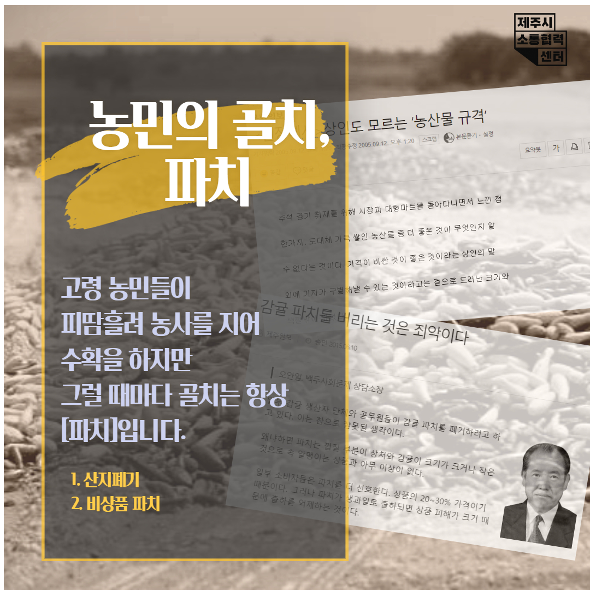
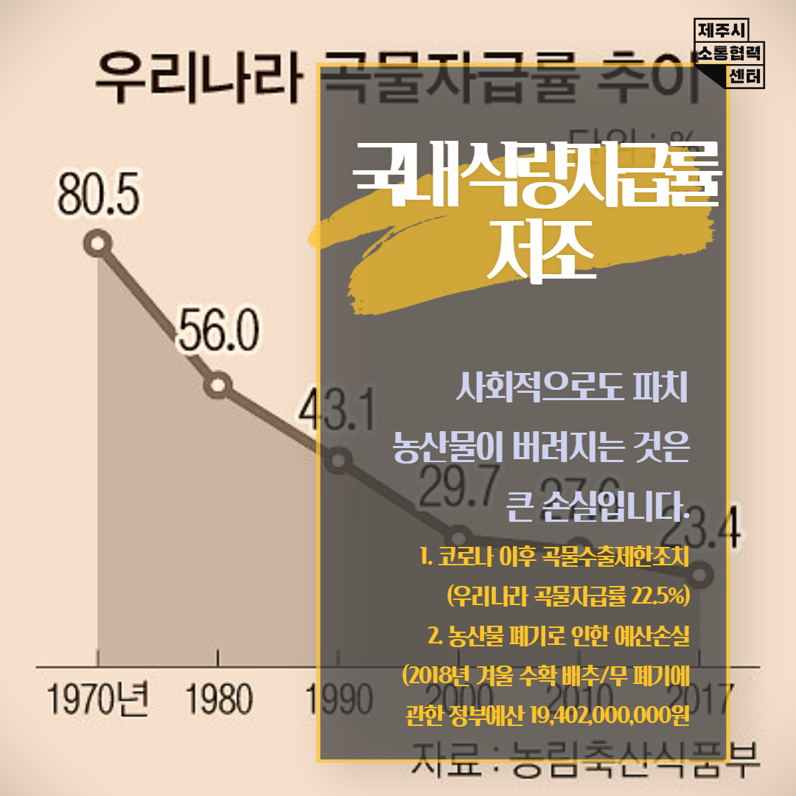
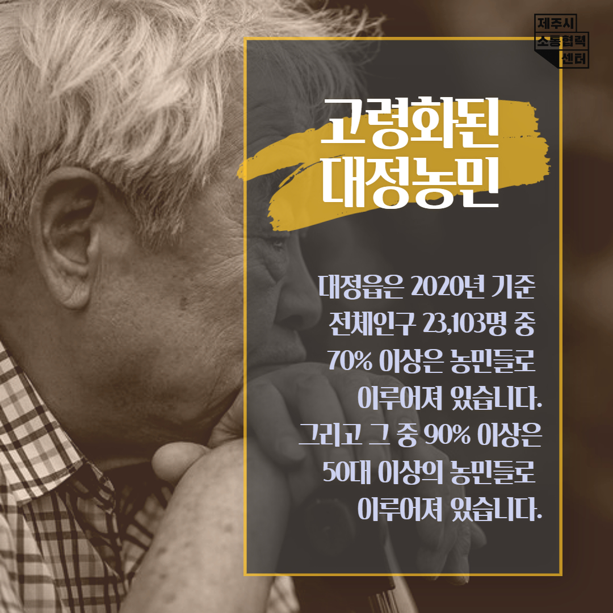
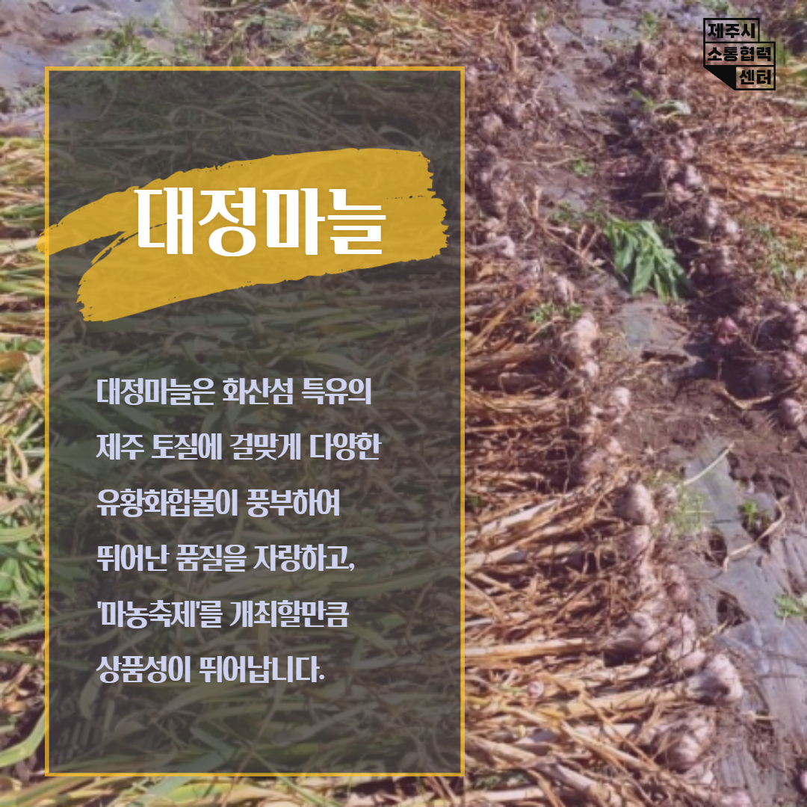
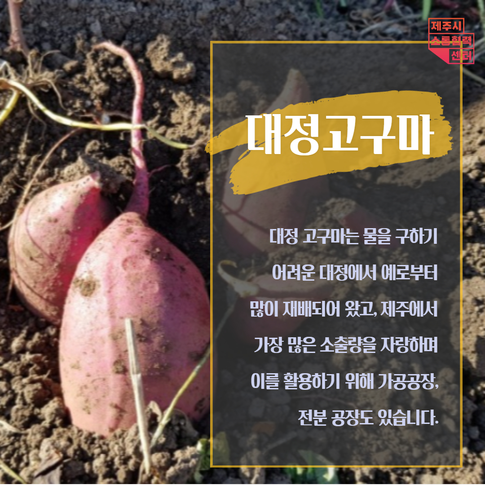

podge
농민의 골치,
파치(버려지는 농산물),
고령농민들의 계속된 골치를
해결하겠습니다.
고령농민들이
피땀흘려 농사를 지어
수확을 하지만
그럴때마다 골치는 항상
'파치'입니다.
- 산지폐기
- 비상품 파치
문제를 해결해 나가고 건강한 농촌을 만들어가겠습니다.
파치란?


대정 파치 이야기
대정읍은 2020년 기준 전체인구 23,103명 중 70%이상은 농민들로 이루어져있습니다. 그리고 그 중 90%이상은 50대 이상의 농민들로 이루어져 있습니다. 고령농민들이 피땀흘려 농사를 지어 수확을 하지만 그럴때마다 골치는 항상 파치 였습니다.



파치문제를 해결해 가겠습니다.
Design Version 2. Code Version 1.Website Template details, discussion and updates for this Frozen Yogurt Shop Website Template.
Website Template design by Free Website Templates.